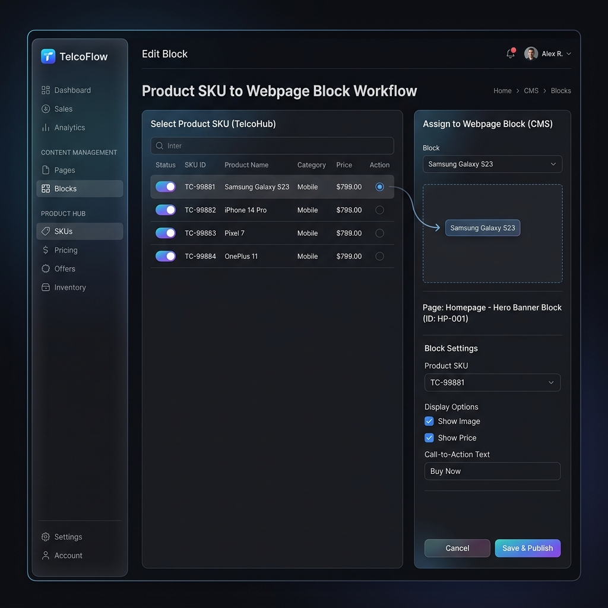

Chiến lược Phát triển Hệ thống CMS & Landing Page Builder (Cập nhật mới)
Tài liệu này trình bày chiến lược phát triển hệ thống Quản trị Nội dung (CMS) & bộ dựng Landing Page (LDP) dành cho FPT Telecom. Các phân hệ về quản lý sản phẩm (PDH), Master Data và Đơn hàng sẽ được quản lý trên các hệ thống chuyên biệt khác và được lược bỏ khỏi phạm vi quản trị trực tiếp của hệ thống này để tối ưu hóa hiệu năng và trải nghiệm người dùng.
1. Đánh giá Hiện trạng & Bài toán (Problem Statement)
Dựa trên thông tin đầu vào và định hướng mới của dự án:
- CMS (Content Management System) & LDP (Landing Page): Tập trung hoàn toàn vào việc quản lý giao diện, các trang Landing Page chiến dịch, Sections, Blocks, Banner, Câu hỏi FAQ và Popups để phục vụ tối đa cho đội ngũ Marketing và Vận hành.
- PDH & Orders (Quản lý Sản phẩm & Đơn hàng): Đã được lược bỏ khỏi hệ thống này do nghiệp vụ được quản lý tập trung ở hệ thống chuyên biệt khác. Việc này giúp giảm tải độ phức tạp của UI/UX và tối ưu hóa luồng công việc cho nhân sự làm nội dung.
2. Giá trị cốt lõi của Hệ thống (Value Proposition)
Hệ thống tập trung giải quyết bài toán Seamless Content Workflow:
- Bộ dựng Landing Page chuyên nghiệp (LDP Builder): Cho phép Vận hành tự do kéo thả, tùy biến các trang đích cho chiến dịch Internet và FPT Play theo các template chuẩn hóa mà không phụ thuộc vào đội ngũ IT.
- Quản lý Cấu trúc Giao diện Linh hoạt: Tổ chức các khối nội dung dưới dạng Sections/Blocks tái sử dụng được, giúp dễ dàng nhân bản và thay đổi giao diện hàng loạt trang web vệ tinh.
- Tối ưu hóa SEO & UTM tự động: Tích hợp các công cụ hỗ trợ Marketing trực tiếp như Google Snippet Preview và Auto UTM Generator ngay trên luồng tạo LDP.
3. Đề xuất Kiến trúc Thông tin Mới (Proposed Information Architecture)
Hệ thống CMS mới được quy hoạch thành một phân hệ quản trị tập trung, sắp xếp thứ tự hiển thị menu điều hướng trực quan theo luồng nghiệp vụ:
Phân hệ Quản trị Nội dung (CMS) & Landing Page Builder
Thứ tự hiển thị các chức năng trên Menu Sidebar được tối ưu hóa như sau:
- Quản lý Trang (Pages): Quản lý danh sách các trang chủ, trang tĩnh, trang tin tức chính thức.
- Quản lý Sections: Quản lý các phân đoạn giao diện lớn (Hero banner, Countdown, Bảng giá...).
- Quản lý Blocks: Quản lý các khối nội dung nhỏ, chi tiết cấu thành nên các Sections.
- Landing Page (LDP) Builder: Nơi dựng các trang đích chiến dịch (LDP Internet, LDP SA FPT Play) với cấu trúc kéo thả nhanh chóng.
- Cấu hình Tab LDP Wizard: Tab "Chọn Template" được đưa lên lựa chọn đầu tiên để định hình phong cách thiết kế ngay từ bước khởi tạo, sau đó mới đến các cấu hình khác (Thông tin chung, SEO, Cấu hình Section...).
- Quản lý Banner: Quản lý các hình ảnh, slide biểu ngữ hiển thị đầu trang hoặc các khu vực quảng cáo.
- Quản lý Bài viết & FAQ: Quản lý danh mục bài viết tin tức và hệ thống câu hỏi thường gặp.
Marketing Gói Bán — Tạm ẩn khỏi menu (Commented out trong wireframe). Sẽ mở lại khi có yêu cầu.- Cài đặt Hiển thị: Cấu hình các tham số hiển thị giao diện chung (Font chữ, màu sắc chủ đạo, logo...).
- Quản lý Popup: Cấu hình hiển thị các popup quảng cáo, popup nhận tư vấn theo thời gian hoặc hành vi của user.
[!NOTE] Tinh chỉnh phạm vi hệ thống (Scope Reduction) — Đã áp dụng vào wireframe:
Theo định hướng mới, các module quản lý dữ liệu gốc và nghiệp vụ giao dịch đã được bóc tách hoàn toàn khỏi giao diện CMS:
- ✅ Quản lý Sản phẩm (PDH) — Đã xoá: SKUs, Gói bán & Giá & Phí đã bị gỡ hoàn toàn khỏi sidebar. Thông tin sản phẩm được quản trị tập trung tại ERP/QLCS của FPT Telecom; CMS chỉ gọi API read-only khi cần hiển thị lên LDP.
- ✅ Master Data — Đã xoá: Danh mục, Đặc tính, Khu vực bán đã bị gỡ hoàn toàn. Dữ liệu gốc thuộc hệ thống ERP chuyên biệt.
- ✅ Hợp đồng & Đơn hàng — Đã xoá: Toàn bộ phân hệ Đơn hàng tạm & Danh sách hợp đồng đã bị gỡ. Luồng đơn hàng xử lý tại OMS/CRM trung tâm.
- ✅ Marketing Gói Bán — Tạm ẩn (Commented out): Mục này vẫn tồn tại trong source code dưới dạng comment HTML, có thể bật lại nhanh khi cần mà không cần viết lại.
4. Câu hỏi thảo luận và định hướng tích hợp (Key Alignment Questions)
[!WARNING] Để chuẩn bị tốt nhất cho giai đoạn tích hợp backend và phát hành LDP Builder:
- API Query Sản phẩm & Giá bán: Khi dựng Landing Page, CMS cần tích hợp các API nào từ hệ thống PDH/QLCS bên thứ 3 để lấy thông tin SKU, Giá bán và Khuyến mãi tương ứng theo Tỉnh thành/Kênh bán? Có cần cơ chế cache dữ liệu sản phẩm tại CMS để đảm bảo tốc độ tải trang (Page Load Time) dưới 1.5s hay không?
- Tích hợp Form Đăng ký: Luồng gửi dữ liệu từ Form Constructor trên các Landing Page sẽ gọi trực tiếp đến API của CRM/OMS, hay đi qua một Middleware trung gian? Cần cơ chế lưu trữ tạm (Database log) của CMS khi API đầu cuối gặp sự cố để tránh mất lead khách hàng không?
- Phân quyền người dùng (RBAC): Phân chia vai trò rõ ràng giữa:
- Content Editor: Chỉ tạo/sửa bài viết, FAQ, banner.
- Marketing Campaign Manager: Có quyền tạo Landing Page, tùy chỉnh Form đăng ký và liên kết với template chiến dịch.
- Super Admin: Quản lý cấu trúc chung của web (Pages, Sections, Blocks) và cấu hình hiển thị hệ thống.
5. UI/UX Revamp Strategy (Chiến lược tái thiết kế giao diện)
Tình trạng Dev dựng UI "theo cảm tính" làm cho luồng thao tác bị đứt đoạn là rất phổ biến ở các công cụ nội bộ (Internal Tools). Khi đập đi xây lại, chúng ta sẽ áp dụng các nguyên tắc UX sau để nâng cấp nó thành một Premium Admin Dashboard:
- Workflow-centric Design (Thiết kế theo luồng công việc): Không bắt user bấm qua lại quá nhiều tab. Các tác vụ liên quan như "Sửa giá" và "Hiển thị lên web" sẽ được đặt cạnh nhau (Split-view hoặc Drawer).
- Progressive Disclosure (Hiển thị lũy tiến): Ẩn các trường cấu hình nâng cao (vd: Cấu hình SEO, ID hệ thống) vào các Accordion, chỉ show những trường quan trọng nhất để Form không bị ngợp.
- Nhất quán Design System: Áp dụng bộ UI Components chuẩn mực để thống nhất toàn bộ Bảng biểu (Table), Form, Nút bấm.
[!TIP] Mình vừa tạo xong một bản vẽ phác thảo (Mockup Concept) cho giao diện hợp nhất này với phong cách Dark Mode hiện đại, trực quan. Bạn có thể xem trực tiếp hình ảnh bên dưới để hình dung!

6. Kết Quả Triển Khai Thực Tế (Actual Implementation Results)
Hệ thống đã triển khai các cập nhật quan trọng tập trung toàn diện vào mô hình Quản trị nội dung và tối ưu hóa luồng xây dựng Landing Page:
6.1. Quản lý SKU & Sản phẩm (Lưu ý: Đã lược bỏ)
[ĐÃ GỠ BỎ] Giao diện quản lý danh sách SKU, thuộc tính và giá cả đã được lược bỏ hoàn toàn khỏi giao diện quản trị CMS này, vì nghiệp vụ quản lý sản phẩm gốc được thực hiện trên hệ thống ERP/QLCS chuyên biệt của FPT Telecom.
6.2. Master Data & Đơn hàng (Lưu ý: Đã lược bỏ)
[ĐÃ GỠ BỎ] Giao diện quản trị danh mục, đặc tính, khu vực bán và danh sách đơn hàng tạm/hợp đồng đã được gỡ bỏ khỏi dự án để đảm bảo tính tinh gọn của hệ thống CMS.
6.3. Định Hướng Thiết Kế Landing Page Builder (Phân tích từ Canva Design)
Dựa trên rà soát thiết kế giao diện từ Canva https://canva.link/ijg6d24oqyau8fs, hệ thống CMS Module 1 sẽ bổ sung định hướng xây dựng phân hệ Landing Page Builder (Low-code/No-code) để đội ngũ Vận hành (VH) có thể tự thiết lập các trang đích cho 2 nhóm chiến dịch chủ lực:
1. Trang đích dịch vụ Internet & Combo (LDP Internet)
- Cấu trúc các Section: Hero Banner (Hook tiêu đề, icon cam kết nhanh) -> Dải Countdown đếm ngược khuyến mãi khẩn cấp -> Marquee chạy thông tin khách hàng đăng ký thành công (Social Proof) -> Bảng so sánh các gói cước Pricing Grid (Tích hợp sâu từ PDH) -> Lợi ích & Feedback khách hàng -> Form đăng ký tư vấn tích hợp Popup chúc mừng.
- CMS Settings: Cho phép Bật/Tắt, Kéo/Thả sắp xếp thứ tự hiển thị của từng Section. Tự động đồng bộ giá bán tối thiểu từ module PDH lên Pricing Grid hoặc cho phép ghi đè (override) text khuyến mãi đặc biệt.
2. Trang đích giải trí FPT Play VVIP (LDP SA)
- Phong cách UI: Tone màu tím đậm, xanh đen huyền bí cao cấp phong cách rạp phim.
- Khối nội dung tương tác (Interactive Media Tabs) - Key UX:
- Thiết lập Tab "Thể thao trực tiếp": Hỗ trợ tính năng Hover/Click phát video tự động (Autoplay trailer/highlight). Cho phép VH tải trực tiếp file video (mp4) lên CMS hoặc dán link nhúng YouTube.
- Thiết lập Tab "Giải trí toàn diện": Người dùng di chuột để chuyển đổi linh hoạt qua lại giữa các nhóm nội dung con (Phim bộ & Phim lẻ, Kênh truyền hình, Anime...).
3. Bộ tạo Form Đăng ký (Form Constructor)
CMS sẽ cung cấp bộ tạo form cho phép cấu hình linh hoạt các trường nhập liệu cần thu thập (Họ tên, SĐT, Địa chỉ, Email) và đặt trạng thái bắt buộc (Required).
6.4. Tối Ưu Hóa UI/UX Module Landing Page (LDP) Wizard
- ✅ Chọn Template Đầu Tiên (Đã triển khai): Tab "Chọn Template" đã được đưa lên vị trí Step 1 trong Wizard. Luồng mới: ① Chọn Template → ② Thông tin trang (SEO, UTM, metadata) → ③ Nội dung sections. Sau khi chọn template, hệ thống tự động chuyển sang bước Thông tin trang để hoàn thiện cấu hình trước khi vào Section Builder.
- Google Search Snippet Preview (SEO Mockup): Tích hợp khung xem trước giao diện kết quả tìm kiếm Google thay đổi realtime theo tiêu đề, mô tả và đường dẫn slug giúp VH chủ động kiểm soát chiều dài văn bản tránh bị cắt chữ.
- Auto UTM Generator (Tạo UTM Nhanh): Bổ sung nút bấm "Tạo nhanh" UTM tracking từ tên chiến dịch giúp VH thiết lập UTM Source, Medium, Campaign chuẩn hóa chỉ bằng một cú click, hiển thị preview URL đầy đủ bên dưới.
- Nút Di Chuyển Lên/Xuống (▲/▼) Cho Section: Hỗ trợ thêm nút mũi tên điều khiển nhanh thứ tự các Section bên cạnh biểu tượng kéo thả ☰, giúp VH thao tác cực kỳ mượt mà ngay cả trên thiết bị di động/tablet cảm ứng.
- Dynamic Testimonial Repeater & Upload Mockup: Nâng cấp form đánh giá khách hàng thành danh sách lặp động (cho phép thêm mới không giới hạn, xóa nhanh bằng nút 🗑). Tích hợp khung Upload ảnh giả lập hiển thị thumbnail preview thu nhỏ kèm nút xóa ảnh ✕.
7. Next Steps (Kế hoạch hành động tiếp theo)
- Tập trung tối ưu hóa các Block & Section: Thiết lập các block hiển thị dữ liệu giá cước động kết nối với API bên thứ 3 (PDH) để đồng bộ thông tin gói cước lên Landing Page tự động.
- Xây dựng Engine Kéo Thả cho Landing Page Builder: Phát triển thử nghiệm luồng dựng trang bằng cách kéo thả sắp xếp thứ tự các Section (Hero Banner, Countdown, Bảng giá, Testimonials, Form Đăng ký) và cho phép Bật/Tắt từng phần.
- Cấu hình bộ tạo Form Constructor: Hoàn thiện giao diện cho phép cấu hình linh hoạt các trường thông tin khách hàng (Họ tên, SĐT, Địa chỉ, Email) và gửi thông tin lead về CRM.
- Kiểm thử khả năng tương thích hiển thị (Responsive Design): Đảm bảo tất cả các trang Landing Page tạo ra từ CMS đều hiển thị mượt mà trên cả Desktop, Tablet và Mobile.